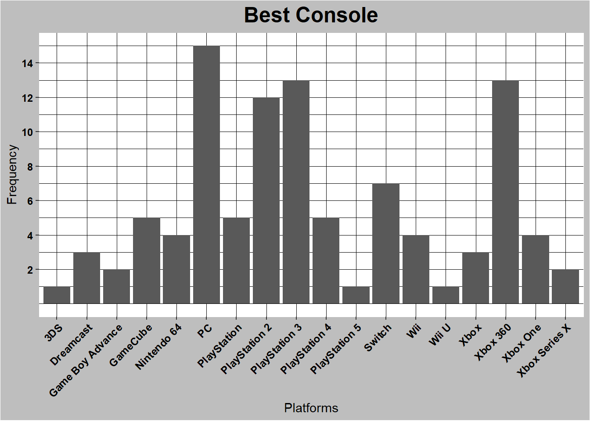

dataVG <-read_csv("data.csv")dataVG <- dataVG %>%select(Name, Platform, Metascore, Date, Title)#Sample of the datahead(dataVG)
# A tibble: 6 × 5
Name Platform Metascore Date Title
<chr> <chr> <dbl> <chr> <chr>
1 The Legend of Zelda: Ocarina of Time Nintendo 64 99 23-Nov-98 "As a …
2 Tony Hawk's Pro Skater 2 PlayStation 98 20-Sep-00 "As mo…
3 Grand Theft Auto IV PlayStation 3 98 29-Apr-08 "[Meta…
4 SoulCalibur Dreamcast 98 8-Sep-99 "This …
5 Grand Theft Auto IV Xbox 360 98 29-Apr-08 "[Meta…
6 Super Mario Galaxy Wii 97 12-Nov-07 "[Meta…
# A tibble: 18 × 4
Platform Platform_Frequency `Meta-Sum` `Meta-Mean`
<chr> <int> <dbl> <dbl>
1 3DS 1 94 94
2 Dreamcast 3 292 97.3
3 Game Boy Advance 2 190 95
4 GameCube 5 480 96
5 Nintendo 64 4 387 96.8
6 PC 15 1426 95.1
7 PlayStation 5 478 95.6
8 PlayStation 2 12 1142 95.2
9 PlayStation 3 13 1237 95.2
10 PlayStation 4 5 478 95.6
11 PlayStation 5 1 96 96
12 Switch 7 669 95.6
13 Wii 4 383 95.8
14 Wii U 1 96 96
15 Xbox 3 288 96
16 Xbox 360 13 1239 95.3
17 Xbox One 4 383 95.8
18 Xbox Series X 2 190 95
#graph created by comparing the values in both columns on the given datasetggplot(dataVG, aes(x = Platform)) +geom_bar() +scale_y_continuous(limits=c(0, 15), breaks =c(2,4,6,8,10,12,14)) +#Aesthetics and graph details.theme(panel.background =element_rect(fill ="white",colour ="white",size =0.25, linetype ='solid'),panel.grid.major =element_line(size =0.25, linetype ='solid',colour ="black"), panel.grid.minor =element_line(size =0.25, linetype ='solid',colour ="black"),plot.background =element_rect(fill ="gray"),axis.text.x =element_text(face ="bold", color ="black", size=9, angle =45,hjust=1),axis.text.y =element_text(face ="bold", color ="black", size=9, hjust=1), plot.title =element_text(color ="black", size =18, face ="bold", hjust =0.5)) +labs(title ="Best Console", x ="Platforms", y ="Frequency")

#graph created by comparing the values in both columns on the given datasetggplot(dataVG, aes(y = Platform, x = Metascore, color = Metascore)) +geom_point(method ="lm") +#Aesthetics and graph details.theme(panel.background =element_rect(fill ="white",colour ="white",size =0.25, linetype ='solid'),panel.grid.major =element_line(size =0.25, linetype ='dashed',colour ="black"), panel.grid.minor =element_line(size =0.25, linetype ='blank',colour ="black"),plot.background =element_rect(fill ="gray"),axis.text.x =element_text(face ="bold", color ="black", size=9),axis.text.y =element_text(face ="bold", color ="black",size=9), plot.title =element_text(color ="black", size =18,face ="bold", hjust =0.5)) +labs(title ="Best Console", x ="Metascore", y ="Platforms")
# A tibble: 100 × 5
# Groups: Platform [18]
Name Platform Metascore Date Platform_Frequency
<chr> <chr> <dbl> <chr> <int>
1 The Legend of Zelda: Ocarina of … Nintend… 99 23-N… 4
2 Tony Hawk's Pro Skater 2 PlaySta… 98 20-S… 5
3 Grand Theft Auto IV PlaySta… 98 29-A… 13
4 SoulCalibur Dreamca… 98 8-Se… 3
5 Grand Theft Auto IV Xbox 360 98 29-A… 13
6 Super Mario Galaxy Wii 97 12-N… 4
7 Super Mario Galaxy 2 Wii 97 23-M… 4
8 Red Dead Redemption 2 Xbox One 97 26-O… 4
9 Grand Theft Auto V Xbox One 97 18-N… 4
10 Grand Theft Auto V PlaySta… 97 17-S… 13
# ℹ 90 more rows
#Sample of the filtered Datahead(dataVG_Fil)
# A tibble: 6 × 6
# Groups: Platform [6]
Name Platform Metascore Date Title Platform_Frequency
<chr> <chr> <dbl> <chr> <chr> <int>
1 The Legend of Zelda: Ocarin… Nintend… 99 23-N… "As … 4
2 Tony Hawk's Pro Skater 2 PlaySta… 98 20-S… "As … 5
3 Grand Theft Auto IV PlaySta… 98 29-A… "[Me… 13
4 SoulCalibur Dreamca… 98 8-Se… "Thi… 3
5 Grand Theft Auto IV Xbox 360 98 29-A… "[Me… 13
6 Super Mario Galaxy Wii 97 12-N… "[Me… 4
ggplot(dataVG_Fil, aes(x = Platform_Frequency, y = Platform)) +geom_point() +geom_count(colour="Blue")